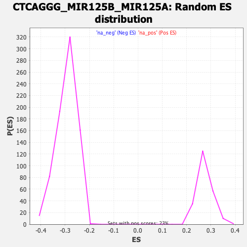

| | | Dataset | DE_genes |
| Phenotype | NoPhenotypeAvailable |
| Upregulated in class | na_neg |
| GeneSet | CTCAGGG_MIR125B_MIR125A |
| Enrichment Score (ES) | -0.46748993 |
| Normalized Enrichment Score (NES) | -1.5949318 |
| Nominal p-value | 0.0 |
| FDR q-value | 0.17962557 |
| FWER p-Value | 0.921 |
Table: GSEA Results Summary
 Fig 1: Enrichment plot: CTCAGGG_MIR125B_MIR125A
Fig 1: Enrichment plot: CTCAGGG_MIR125B_MIR125A
Profile of the Running ES Score & Positions of GeneSet Members on the Rank Ordered List
| PROBE | GENE SYMBOL | GENE_TITLE | RANK IN GENE LIST | RANK METRIC SCORE | RUNNING ES | CORE ENRICHMENT | | 1 | KCNH7 | | | 76 | 7.141 | 0.0239 | No |
| 2 | ZNF385A | | | 286 | 2.884 | 0.0217 | No |
| 3 | RAB8B | | | 376 | 2.328 | 0.0253 | No |
| 4 | CCDC71L | | | 502 | 1.766 | 0.0242 | No |
| 5 | GTPBP2 | | | 545 | 1.602 | 0.0279 | No |
| 6 | PARP14 | | | 719 | 1.242 | 0.0215 | No |
| 7 | MLF2 | | | 815 | 1.085 | 0.0196 | No |
| 8 | HIC2 | | | 847 | 1.047 | 0.0218 | No |
| 9 | SRRM3 | | | 952 | 0.923 | 0.0187 | No |
| 10 | ETV6 | | | 1030 | 0.819 | 0.0169 | No |
| 11 | UBE2W | | | 1235 | 0.654 | 0.0061 | No |
| 12 | CPEB3 | | | 1353 | 0.584 | 0.0008 | No |
| 13 | PPME1 | | | 1362 | 0.579 | 0.0026 | No |
| 14 | VCPIP1 | | | 1367 | 0.577 | 0.0047 | No |
| 15 | OSBPL9 | | | 1403 | 0.566 | 0.0047 | No |
| 16 | ZSWIM4 | | | 1416 | 0.560 | 0.0061 | No |
| 17 | RNF144B | | | 1436 | 0.550 | 0.0071 | No |
| 18 | SEMA4B | | | 1460 | 0.538 | 0.0078 | No |
| 19 | FNDC3B | | | 1492 | 0.520 | 0.0078 | No |
| 20 | GANC | | | 1554 | 0.493 | 0.0058 | No |
| 21 | PAPOLA | | | 1697 | 0.433 | -0.0018 | No |
| 22 | RET | | | 1817 | 0.384 | -0.0081 | No |
| 23 | STAT3 | | | 2042 | 0.314 | -0.0216 | No |
| 24 | GALNT7 | | | 2113 | 0.294 | -0.0250 | No |
| 25 | PRDM1 | | | 2120 | 0.292 | -0.0242 | No |
| 26 | CSNK2A1 | | | 2162 | 0.277 | -0.0258 | No |
| 27 | ADAM11 | | | 2173 | 0.274 | -0.0254 | No |
| 28 | GALNT14 | | | 2177 | 0.273 | -0.0245 | No |
| 29 | KCTD21 | | | 2178 | 0.273 | -0.0234 | No |
| 30 | GPC4 | | | 2192 | 0.269 | -0.0231 | No |
| 31 | CASP2 | | | 2249 | 0.255 | -0.0258 | No |
| 32 | DRAM2 | | | 2273 | 0.249 | -0.0263 | No |
| 33 | NIN | | | 2287 | 0.246 | -0.0262 | No |
| 34 | IQSEC2 | | | 2300 | 0.244 | -0.0260 | No |
| 35 | LACTB | | | 2360 | 0.230 | -0.0289 | No |
| 36 | PLAGL2 | | | 2362 | 0.229 | -0.0281 | No |
| 37 | LFNG | | | 2642 | 0.183 | -0.0457 | No |
| 38 | SLC4A10 | | | 2653 | 0.183 | -0.0456 | No |
| 39 | MAP3K10 | | | 2682 | 0.179 | -0.0468 | No |
| 40 | SGPL1 | | | 2744 | 0.168 | -0.0501 | No |
| 41 | DVL3 | | | 2840 | 0.157 | -0.0557 | No |
| 42 | ST8SIA4 | | | 2852 | 0.155 | -0.0558 | No |
| 43 | SEMA4D | | | 2902 | 0.150 | -0.0585 | No |
| 44 | SLC7A1 | | | 2983 | 0.142 | -0.0632 | No |
| 45 | GOPC | | | 2985 | 0.141 | -0.0626 | No |
| 46 | HOXC6 | | | 3121 | 0.128 | -0.0710 | No |
| 47 | CDC42SE1 | | | 3170 | 0.126 | -0.0737 | No |
| 48 | EPB41L4A | | | 3188 | 0.124 | -0.0743 | No |
| 49 | PPP2R5C | | | 3199 | 0.122 | -0.0745 | No |
| 50 | UBE2G1 | | | 3245 | 0.118 | -0.0770 | No |
| 51 | SLC38A9 | | | 3417 | 0.106 | -0.0878 | No |
| 52 | IKZF4 | | | 3465 | 0.101 | -0.0905 | No |
| 53 | ASIC1 | | | 3475 | 0.100 | -0.0907 | No |
| 54 | LNPEP | | | 3564 | 0.095 | -0.0961 | No |
| 55 | E2F3 | | | 3599 | 0.092 | -0.0980 | No |
| 56 | HCN4 | | | 3870 | 0.078 | -0.1154 | No |
| 57 | ADD2 | | | 3928 | 0.075 | -0.1189 | No |
| 58 | DIRAS1 | | | 4096 | 0.064 | -0.1296 | No |
| 59 | ANTXR2 | | | 4147 | 0.062 | -0.1327 | No |
| 60 | MAPK14 | | | 4156 | 0.061 | -0.1330 | No |
| 61 | SLITRK6 | | | 4301 | 0.053 | -0.1423 | No |
| 62 | IL16 | | | 4376 | 0.049 | -0.1469 | No |
| 63 | UVRAG | | | 4456 | 0.044 | -0.1520 | No |
| 64 | MMP11 | | | 4485 | 0.043 | -0.1536 | No |
| 65 | UBE2R2 | | | 4499 | 0.042 | -0.1543 | No |
| 66 | ATP10D | | | 4507 | 0.041 | -0.1546 | No |
| 67 | NEFM | | | 4608 | 0.036 | -0.1611 | No |
| 68 | AP4E1 | | | 4750 | 0.028 | -0.1703 | No |
| 69 | SLC8A2 | | | 4778 | 0.027 | -0.1719 | No |
| 70 | DYNLT3 | | | 4904 | 0.021 | -0.1801 | No |
| 71 | BSN | | | 4960 | 0.018 | -0.1836 | No |
| 72 | RPS6KA1 | | | 4961 | 0.018 | -0.1836 | No |
| 73 | GRIN2A | | | 5012 | 0.015 | -0.1868 | No |
| 74 | ADCY1 | | | 5137 | 0.009 | -0.1949 | No |
| 75 | SAMD10 | | | 5164 | 0.008 | -0.1966 | No |
| 76 | SCN2B | | | 5213 | 0.006 | -0.1997 | No |
| 77 | TAF9B | | | 5371 | -0.003 | -0.2101 | No |
| 78 | FAM131B | | | 5416 | -0.005 | -0.2130 | No |
| 79 | SMG1 | | | 5431 | -0.006 | -0.2139 | No |
| 80 | SOX11 | | | 5470 | -0.008 | -0.2163 | No |
| 81 | EIF5A2 | | | 5772 | -0.025 | -0.2361 | No |
| 82 | AGO2 | | | 5782 | -0.025 | -0.2366 | No |
| 83 | TLK2 | | | 5793 | -0.026 | -0.2371 | No |
| 84 | MSI1 | | | 5814 | -0.027 | -0.2383 | No |
| 85 | CDK16 | | | 5881 | -0.031 | -0.2426 | No |
| 86 | RBM38 | | | 5995 | -0.039 | -0.2499 | No |
| 87 | TBC1D25 | | | 6096 | -0.046 | -0.2563 | No |
| 88 | UBE2L3 | | | 6162 | -0.050 | -0.2603 | No |
| 89 | TRIL | | | 6167 | -0.051 | -0.2604 | No |
| 90 | SLC17A7 | | | 6269 | -0.057 | -0.2668 | No |
| 91 | ACER2 | | | 6329 | -0.060 | -0.2705 | No |
| 92 | MEMO1 | | | 6356 | -0.062 | -0.2719 | No |
| 93 | ABCC5 | | | 6477 | -0.071 | -0.2796 | No |
| 94 | TGOLN2 | | | 6509 | -0.073 | -0.2813 | No |
| 95 | CORO2A | | | 6550 | -0.075 | -0.2836 | No |
| 96 | ZFHX2 | | | 6659 | -0.085 | -0.2904 | No |
| 97 | KLC2 | | | 6695 | -0.088 | -0.2924 | No |
| 98 | BAK1 | | | 6822 | -0.097 | -0.3003 | No |
| 99 | M6PR | | | 6835 | -0.097 | -0.3007 | No |
| 100 | SLC7A6 | | | 6844 | -0.098 | -0.3008 | No |
| 101 | TXNRD1 | | | 6875 | -0.101 | -0.3024 | No |
| 102 | MFN1 | | | 6892 | -0.102 | -0.3030 | No |
| 103 | TMEM161B | | | 6930 | -0.105 | -0.3050 | No |
| 104 | HOMEZ | | | 6949 | -0.107 | -0.3058 | No |
| 105 | TMEM168 | | | 7094 | -0.118 | -0.3148 | No |
| 106 | NRM | | | 7264 | -0.132 | -0.3254 | No |
| 107 | TRAPPC6B | | | 7346 | -0.140 | -0.3302 | No |
| 108 | SPEG | | | 7358 | -0.141 | -0.3303 | No |
| 109 | RHOQ | | | 7437 | -0.148 | -0.3349 | No |
| 110 | VPS4B | | | 7489 | -0.151 | -0.3376 | No |
| 111 | FLOT2 | | | 7607 | -0.162 | -0.3447 | No |
| 112 | DOCK3 | | | 7628 | -0.164 | -0.3453 | No |
| 113 | MTMR3 | | | 7733 | -0.173 | -0.3515 | No |
| 114 | NT5DC1 | | | 7749 | -0.175 | -0.3518 | No |
| 115 | FCHSD1 | | | 7821 | -0.181 | -0.3557 | No |
| 116 | SATB2 | | | 7961 | -0.194 | -0.3641 | No |
| 117 | SYN2 | | | 8107 | -0.209 | -0.3728 | No |
| 118 | SLC25A15 | | | 8148 | -0.213 | -0.3746 | No |
| 119 | DCTN1 | | | 8185 | -0.217 | -0.3761 | No |
| 120 | SLC39A9 | | | 8202 | -0.218 | -0.3763 | No |
| 121 | VDR | | | 8266 | -0.225 | -0.3795 | No |
| 122 | BRPF1 | | | 8281 | -0.228 | -0.3795 | No |
| 123 | SUV39H1 | | | 8322 | -0.231 | -0.3812 | No |
| 124 | ADAM9 | | | 8363 | -0.236 | -0.3829 | No |
| 125 | PAFAH1B1 | | | 8398 | -0.239 | -0.3842 | No |
| 126 | FAM53C | | | 8432 | -0.244 | -0.3854 | No |
| 127 | CNNM1 | | | 8456 | -0.246 | -0.3859 | No |
| 128 | SZRD1 | | | 8637 | -0.266 | -0.3967 | No |
| 129 | TBC1D1 | | | 8649 | -0.268 | -0.3963 | No |
| 130 | CACNB1 | | | 8662 | -0.269 | -0.3960 | No |
| 131 | SARM1 | | | 8696 | -0.274 | -0.3971 | No |
| 132 | ANKRD50 | | | 8704 | -0.275 | -0.3964 | No |
| 133 | KCNIP3 | | | 8819 | -0.288 | -0.4028 | No |
| 134 | HMGB3 | | | 8866 | -0.293 | -0.4046 | No |
| 135 | LIMD2 | | | 8959 | -0.304 | -0.4095 | No |
| 136 | TRIAP1 | | | 8981 | -0.308 | -0.4096 | No |
| 137 | WIPF2 | | | 9003 | -0.311 | -0.4097 | No |
| 138 | ARID3B | | | 9192 | -0.334 | -0.4208 | No |
| 139 | NIPA1 | | | 9267 | -0.343 | -0.4243 | No |
| 140 | ZBTB7A | | | 9324 | -0.350 | -0.4265 | No |
| 141 | SH3BP4 | | | 9338 | -0.351 | -0.4260 | No |
| 142 | CSDE1 | | | 9401 | -0.359 | -0.4286 | No |
| 143 | PTPN18 | | | 9453 | -0.366 | -0.4305 | No |
| 144 | PELI2 | | | 9466 | -0.367 | -0.4298 | No |
| 145 | SET | | | 9475 | -0.369 | -0.4288 | No |
| 146 | SEMA4F | | | 9525 | -0.376 | -0.4305 | No |
| 147 | MTUS1 | | | 9565 | -0.383 | -0.4316 | No |
| 148 | MAP6 | | | 9589 | -0.386 | -0.4315 | No |
| 149 | TOR2A | | | 9598 | -0.387 | -0.4305 | No |
| 150 | EAF1 | | | 9610 | -0.390 | -0.4296 | No |
| 151 | UBTD1 | | | 9630 | -0.393 | -0.4293 | No |
| 152 | MCL1 | | | 9684 | -0.402 | -0.4312 | No |
| 153 | BMF | | | 9698 | -0.404 | -0.4304 | No |
| 154 | USP12 | | | 9702 | -0.404 | -0.4289 | No |
| 155 | PTPRF | | | 9717 | -0.407 | -0.4282 | No |
| 156 | ITGA9 | | | 9761 | -0.411 | -0.4294 | No |
| 157 | RBM7 | | | 9772 | -0.413 | -0.4284 | No |
| 158 | LOXL1 | | | 9828 | -0.421 | -0.4303 | No |
| 159 | BRPF3 | | | 9851 | -0.425 | -0.4300 | No |
| 160 | BMPR2 | | | 9973 | -0.443 | -0.4362 | No |
| 161 | EVA1A | | | 10060 | -0.456 | -0.4401 | No |
| 162 | MAP3K11 | | | 10150 | -0.470 | -0.4440 | No |
| 163 | FUT4 | | | 10204 | -0.478 | -0.4456 | No |
| 164 | SLC4A4 | | | 10261 | -0.485 | -0.4473 | No |
| 165 | DICER1 | | | 10361 | -0.499 | -0.4518 | No |
| 166 | NUP210 | | | 10407 | -0.506 | -0.4527 | No |
| 167 | GGT7 | | | 10521 | -0.523 | -0.4581 | No |
| 168 | ZFYVE1 | | | 10523 | -0.524 | -0.4560 | No |
| 169 | DNAJB5 | | | 10570 | -0.533 | -0.4569 | No |
| 170 | NEU1 | | | 10578 | -0.534 | -0.4552 | No |
| 171 | COPS7B | | | 10612 | -0.540 | -0.4552 | No |
| 172 | TMPRSS13 | | | 10638 | -0.544 | -0.4546 | No |
| 173 | ELOVL6 | | | 10672 | -0.549 | -0.4546 | No |
| 174 | FOXS1 | | | 10706 | -0.554 | -0.4545 | No |
| 175 | TP53INP1 | | | 10708 | -0.554 | -0.4524 | No |
| 176 | ATXN1 | | | 10716 | -0.555 | -0.4506 | No |
| 177 | ALPK3 | | | 10752 | -0.560 | -0.4506 | No |
| 178 | ANPEP | | | 10759 | -0.562 | -0.4487 | No |
| 179 | ENTPD4 | | | 10807 | -0.568 | -0.4495 | No |
| 180 | EMID1 | | | 10816 | -0.570 | -0.4478 | No |
| 181 | RAB3D | | | 10890 | -0.580 | -0.4502 | No |
| 182 | KIAA1522 | | | 10928 | -0.587 | -0.4503 | No |
| 183 | CEP85 | | | 10979 | -0.594 | -0.4512 | No |
| 184 | RHOT2 | | | 11015 | -0.600 | -0.4511 | No |
| 185 | SRF | | | 11024 | -0.602 | -0.4492 | No |
| 186 | EIF4EBP1 | | | 11165 | -0.629 | -0.4559 | No |
| 187 | SORT1 | | | 11227 | -0.642 | -0.4573 | No |
| 188 | RNF121 | | | 11379 | -0.673 | -0.4645 | No |
| 189 | NECAB3 | | | 11411 | -0.681 | -0.4638 | No |
| 190 | ZNF236 | | | 11468 | -0.692 | -0.4647 | Yes |
| 191 | PCSK7 | | | 11477 | -0.694 | -0.4624 | Yes |
| 192 | BCL9L | | | 11533 | -0.705 | -0.4632 | Yes |
| 193 | VANGL2 | | | 11559 | -0.710 | -0.4620 | Yes |
| 194 | CASC3 | | | 11571 | -0.714 | -0.4598 | Yes |
| 195 | RTN2 | | | 11592 | -0.719 | -0.4582 | Yes |
| 196 | SIRT7 | | | 11666 | -0.735 | -0.4601 | Yes |
| 197 | CCNJ | | | 11701 | -0.742 | -0.4593 | Yes |
| 198 | SYVN1 | | | 11713 | -0.744 | -0.4570 | Yes |
| 199 | PCGF6 | | | 11730 | -0.748 | -0.4550 | Yes |
| 200 | PHYHIP | | | 11799 | -0.762 | -0.4564 | Yes |
| 201 | MEGF8 | | | 11869 | -0.776 | -0.4579 | Yes |
| 202 | ZNF691 | | | 11974 | -0.798 | -0.4615 | Yes |
| 203 | FAM78A | | | 12004 | -0.806 | -0.4601 | Yes |
| 204 | NCOR2 | | | 12066 | -0.817 | -0.4609 | Yes |
| 205 | LYPLA2 | | | 12131 | -0.837 | -0.4617 | Yes |
| 206 | RNF44 | | | 12148 | -0.842 | -0.4593 | Yes |
| 207 | IP6K1 | | | 12153 | -0.843 | -0.4562 | Yes |
| 208 | SLC27A4 | | | 12255 | -0.866 | -0.4594 | Yes |
| 209 | CDR2L | | | 12308 | -0.879 | -0.4592 | Yes |
| 210 | DALRD3 | | | 12313 | -0.880 | -0.4559 | Yes |
| 211 | EIF1AD | | | 12320 | -0.883 | -0.4528 | Yes |
| 212 | SCARB1 | | | 12407 | -0.905 | -0.4548 | Yes |
| 213 | DPF2 | | | 12466 | -0.919 | -0.4549 | Yes |
| 214 | VEGFA | | | 12537 | -0.937 | -0.4557 | Yes |
| 215 | KHNYN | | | 12598 | -0.953 | -0.4558 | Yes |
| 216 | SH3BP5L | | | 12630 | -0.962 | -0.4540 | Yes |
| 217 | HOXB3 | | | 12708 | -0.983 | -0.4551 | Yes |
| 218 | ELMSAN1 | | | 12710 | -0.985 | -0.4511 | Yes |
| 219 | DIS3L2 | | | 12719 | -0.987 | -0.4477 | Yes |
| 220 | SPTB | | | 12721 | -0.987 | -0.4437 | Yes |
| 221 | CPSF6 | | | 12786 | -1.007 | -0.4439 | Yes |
| 222 | OLFML2A | | | 12792 | -1.009 | -0.4401 | Yes |
| 223 | TRPS1 | | | 12817 | -1.016 | -0.4376 | Yes |
| 224 | SOCS4 | | | 12837 | -1.025 | -0.4347 | Yes |
| 225 | MED15 | | | 12975 | -1.068 | -0.4394 | Yes |
| 226 | MYO18A | | | 12976 | -1.069 | -0.4351 | Yes |
| 227 | CGN | | | 13063 | -1.095 | -0.4364 | Yes |
| 228 | ESRRA | | | 13078 | -1.098 | -0.4328 | Yes |
| 229 | ESYT1 | | | 13097 | -1.105 | -0.4296 | Yes |
| 230 | SMURF1 | | | 13188 | -1.133 | -0.4309 | Yes |
| 231 | RAPGEFL1 | | | 13219 | -1.145 | -0.4283 | Yes |
| 232 | MYLK | | | 13238 | -1.151 | -0.4248 | Yes |
| 233 | ABHD3 | | | 13254 | -1.156 | -0.4211 | Yes |
| 234 | IRF4 | | | 13264 | -1.160 | -0.4170 | Yes |
| 235 | USP37 | | | 13312 | -1.177 | -0.4154 | Yes |
| 236 | MIB1 | | | 13441 | -1.227 | -0.4188 | Yes |
| 237 | LRP4 | | | 13480 | -1.245 | -0.4163 | Yes |
| 238 | STARD13 | | | 13489 | -1.248 | -0.4118 | Yes |
| 239 | BAZ2A | | | 13565 | -1.280 | -0.4115 | Yes |
| 240 | HIVEP2 | | | 13576 | -1.283 | -0.4070 | Yes |
| 241 | PPAT | | | 13603 | -1.293 | -0.4035 | Yes |
| 242 | MKNK2 | | | 13620 | -1.299 | -0.3993 | Yes |
| 243 | ST6GAL1 | | | 13632 | -1.302 | -0.3948 | Yes |
| 244 | UBN1 | | | 13651 | -1.313 | -0.3906 | Yes |
| 245 | SEC31B | | | 13736 | -1.352 | -0.3907 | Yes |
| 246 | MAMDC2 | | | 13746 | -1.357 | -0.3858 | Yes |
| 247 | MEIS2 | | | 13821 | -1.387 | -0.3851 | Yes |
| 248 | RNF40 | | | 13926 | -1.435 | -0.3861 | Yes |
| 249 | PLXNA1 | | | 13939 | -1.438 | -0.3811 | Yes |
| 250 | IST1 | | | 13967 | -1.455 | -0.3770 | Yes |
| 251 | KCNS3 | | | 14036 | -1.495 | -0.3755 | Yes |
| 252 | SMARCD2 | | | 14080 | -1.523 | -0.3721 | Yes |
| 253 | PCTP | | | 14110 | -1.541 | -0.3678 | Yes |
| 254 | ATOH8 | | | 14149 | -1.567 | -0.3640 | Yes |
| 255 | MASP1 | | | 14194 | -1.596 | -0.3604 | Yes |
| 256 | DENND6A | | | 14227 | -1.616 | -0.3560 | Yes |
| 257 | ASB13 | | | 14228 | -1.616 | -0.3495 | Yes |
| 258 | TSEN54 | | | 14230 | -1.619 | -0.3430 | Yes |
| 259 | ORC2 | | | 14263 | -1.639 | -0.3385 | Yes |
| 260 | KLHL24 | | | 14270 | -1.648 | -0.3322 | Yes |
| 261 | DAG1 | | | 14290 | -1.654 | -0.3268 | Yes |
| 262 | ABHD6 | | | 14315 | -1.668 | -0.3216 | Yes |
| 263 | TEF | | | 14389 | -1.712 | -0.3195 | Yes |
| 264 | RABL6 | | | 14394 | -1.713 | -0.3128 | Yes |
| 265 | ASB6 | | | 14399 | -1.716 | -0.3062 | Yes |
| 266 | MAN1B1 | | | 14415 | -1.724 | -0.3002 | Yes |
| 267 | FBXW4 | | | 14424 | -1.734 | -0.2937 | Yes |
| 268 | RUFY3 | | | 14448 | -1.752 | -0.2881 | Yes |
| 269 | MAP2K7 | | | 14460 | -1.760 | -0.2817 | Yes |
| 270 | ABR | | | 14486 | -1.777 | -0.2762 | Yes |
| 271 | ETS1 | | | 14521 | -1.805 | -0.2711 | Yes |
| 272 | LBH | | | 14592 | -1.864 | -0.2682 | Yes |
| 273 | RFXANK | | | 14596 | -1.868 | -0.2609 | Yes |
| 274 | OAZ2 | | | 14673 | -1.941 | -0.2580 | Yes |
| 275 | DLL4 | | | 14678 | -1.947 | -0.2504 | Yes |
| 276 | SERTAD3 | | | 14720 | -1.990 | -0.2451 | Yes |
| 277 | ZBTB47 | | | 14722 | -1.991 | -0.2371 | Yes |
| 278 | GRSF1 | | | 14735 | -2.003 | -0.2298 | Yes |
| 279 | TBX4 | | | 14752 | -2.020 | -0.2227 | Yes |
| 280 | MXD4 | | | 14806 | -2.069 | -0.2178 | Yes |
| 281 | PPP1CA | | | 14827 | -2.089 | -0.2107 | Yes |
| 282 | LIFR | | | 14886 | -2.144 | -0.2058 | Yes |
| 283 | SLC35A4 | | | 14915 | -2.182 | -0.1988 | Yes |
| 284 | KLF13 | | | 14931 | -2.201 | -0.1909 | Yes |
| 285 | ZNF76 | | | 14936 | -2.216 | -0.1822 | Yes |
| 286 | SEMA4C | | | 14993 | -2.291 | -0.1766 | Yes |
| 287 | PAN2 | | | 15046 | -2.375 | -0.1705 | Yes |
| 288 | SNAI1 | | | 15065 | -2.401 | -0.1620 | Yes |
| 289 | DDX42 | | | 15100 | -2.470 | -0.1542 | Yes |
| 290 | GRB10 | | | 15102 | -2.475 | -0.1443 | Yes |
| 291 | PHC2 | | | 15195 | -2.654 | -0.1396 | Yes |
| 292 | ABTB1 | | | 15277 | -2.858 | -0.1334 | Yes |
| 293 | CD34 | | | 15282 | -2.871 | -0.1220 | Yes |
| 294 | FAM118A | | | 15286 | -2.883 | -0.1106 | Yes |
| 295 | GGA2 | | | 15318 | -3.026 | -0.1004 | Yes |
| 296 | MADD | | | 15324 | -3.047 | -0.0884 | Yes |
| 297 | CBX7 | | | 15347 | -3.152 | -0.0771 | Yes |
| 298 | IER2 | | | 15405 | -3.617 | -0.0662 | Yes |
| 299 | ITGB3 | | | 15409 | -3.673 | -0.0516 | Yes |
| 300 | BAP1 | | | 15413 | -3.723 | -0.0367 | Yes |
| 301 | STC1 | | | 15461 | -4.959 | -0.0198 | Yes |
| 302 | PODXL | | | 15462 | -5.035 | 0.0006 | Yes |
Table: GSEA details [plain text format]

Fig 2: CTCAGGG_MIR125B_MIR125A: Random ES distribution
Gene set null distribution of ES for CTCAGGG_MIR125B_MIR125A